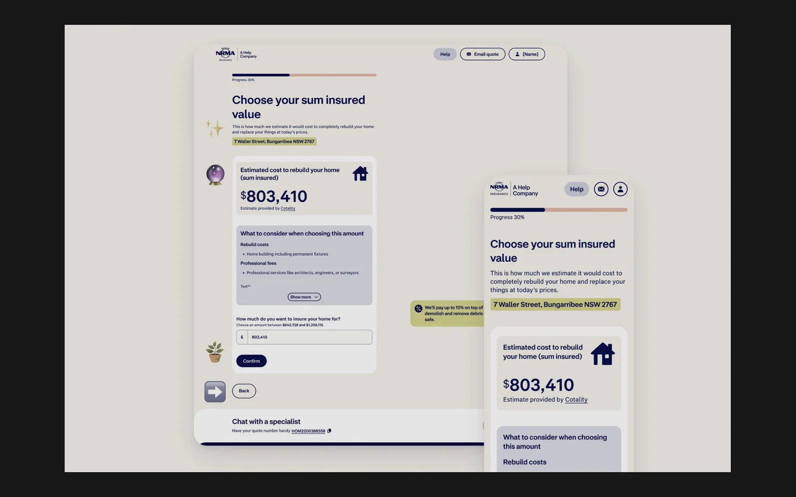
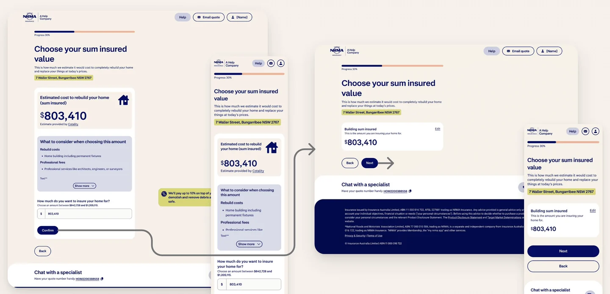

Work / 03 of 06 / NRMA
NRMA Sum Insured Optimisation
Customers had reached a rebuild estimate, then paused. I used session replays to understand what was getting in the way of confirming it.

The context
After the redesigned NRMA quote journey launched, fallout at the sum insured step was around 5% higher than in the previous journey. Customers were already deep into the quote, so I focused on this step.
What the evidence showed
In Tealeaf session replays, customers scrolled and reread the information after seeing the estimated rebuild cost. They rarely changed the amount and often delayed confirming it. We treated that pattern as a sign that the next action needed to be clearer.
The design decision
Our hypothesis was that customers couldn’t see how confirming the estimate moved them forward. I simplified the colour palette and made the estimate the focal point. We moved Confirm to the end of the page, where customers finished reading, and revealed Next after they confirmed.

What changed
We compared the four weeks after release with the previous four weeks. The time-per-session figure uses the pre-redesign experience as its baseline. The release comparison shows what changed in aggregate.